<!DOCTYPE HTML PUBLIC “-//W3C//DTD HTML 4.0 Transitional//EN”>
You will need these basic software installed on your system
before you begin </FONT>
========= 1. Create your model (3DS
Max) 2. Create your map(s)
(photoshop) 3. Applying maps (3dmax)
W3D material in your Material/Map browser. 4. Create bones (3d max
dummy objects) 5. Set up your bones
(3dmax) W3D plugin under "space Warps" 6. Animating Create a model in 3DS max, or if you have one created, move on to
next step. --------------- Create your maps in photoshop (or whatever paint program you
use), if you already made one, move on to next step. Step 2. Step 3. Click on the shader file name button and select the shader file "3dsmax7/maps/fx/CnC3/Simple.fx". Step 4. Tip: ::::::::::::::::::::::::::::::::::::::::::::::::::::::::::::::: Step 2. Step 3.
Step 4.
Step 5.
To achieve that go into the Utilities section, add the W3D Tools
to your Utilities. If you do this the first time, it is probably hidden behind
the More... button. Select your bone dummy object. Then in the W3D Tools uncheck the
"Export Geometry" option, leave the "Export Transform" checked. Step 6.
</FONT> Step 8.
Step 9.
Step 1.
Step 2.
</FONT>
Step 1.
Step 2.
Go to the "Data/Art" folder. Create a folder with
the first two letters of the file name you want to use, eg "Fi".
Give the file the name "Fish.w3x"</P>
Step 4.
Select "W3D XML Asset (*.w3x)" from the file type list. Hit Save Step 5.
The export options dialog comes up. Select "Hierarchical Animated Model" as type
and specify the begin and end frame of the animation you created earlier. If
you skipped that part, you can just export it as "Hierachical Model". Hit Ok
and your file should get written.
A: 3D Studio Max 7 SP1. The plugin has not been tested with later
versions. Support is unknown.
B: "Max2W3X.dle" must be installed in the "plugins" directory of 3d Max.
</P>
Overview
=========
:::::::::::::::::::::::::::::::::::::::::::::::::::::::
Create your model
:::::::::::::::::::::::::::::::::::::::::::::::::::::::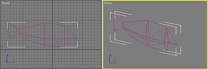
:::::::::::::::::::::::::::::::::::::::::::::::::::::
Create your maps
:::::::::::::::::::::::::::::::::::::::::::::::::::::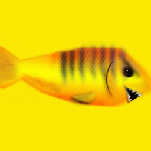
{
"Mean_fish.tga"}
::::::::::::::::::::::::::::::::::::::::::
Applying maps
::::::::::::::::::::::::::::::::::::::::::
Step 1.
=====
Select your model, click open the material editor, pick an empty slot, click
"assign material to selection"
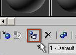
=====
Click the default "standard"
button to open the material map browser. Select "DirectX 9 shader" from the list and
click "OK".
=====
=====
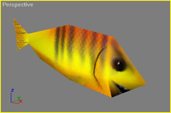 Click the bar labeled "None" next to "Base Texture" and look for the texture you wish to apply, click on the file, then click "open". Now you've selected your texture map.
::::::::::::::::::::::::::::::::::::::::::::
Creating bones
::::::::::::::::::::::::::::::::::::::::::::
Step 1.
=====
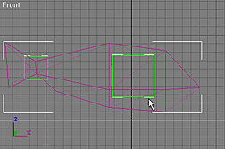Create dummy objects that you will use to
control the vertices of an area of the model and Position them in the areas of
the vertices you wish to control.
You can use the "affect pivot only" in max to reposition the pivot center of
the dummy object for greater control in your animation.
Setting up your bones
::::::::::::::::::::::::::::::::::::::::::::::::::::::::::::::::
Step 1.
=====
Click on the "Create" tab of the side toolbar in max. Click on "Space warps"
and select from the drop down list "Westwood Space Warps."
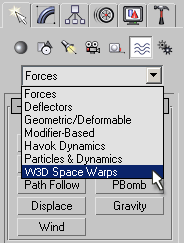
=====
Click on the "WWSkin" button, (its the only one there) and Click and drag in an
orthographic viewport to create the space warp.
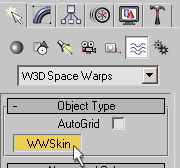
=====
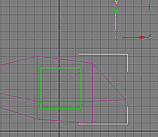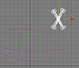It
will first look very tiny or not visible at all. You can use the "scale"
Modifier on the main toolbar to enlarge it so that it is more viewable. The
Space warp Icon looks like a set of crossbones.
=====
Next, you must "add the bones", do so by clicking the "Add Bones" button,
located on the modify panel. Select the bones you want to add and click OK.
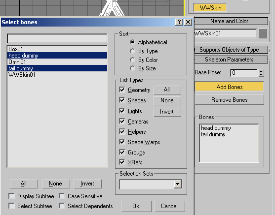
=====
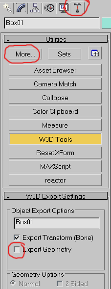Your dummy objects
probably should be hidden when exported, as they don't belong to the object.
</P>
</FONT>
=====
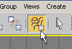Bind your model
to the "WWSkin" space warp by first selecting your model, then clicking the
"bind to spacewarp" button located on the main toolbar in Max. Next, position
your mouse back over the your model and click and drag to the "WWSkin"
(crossbones) Icon to bind them.
</P>
Step 7.
=====
Select your model and you will see it now how the space warp bound to it and
its vertices are showing.
=====
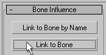Deselect the "bind to space warp button
and use the select button to draw a rectangle around the vertices you would
like to bind to a particular bone, then click the "link to Bone" button located
on the modify panel under your "WWSkin binding", then Click the dummy object
used to represent that bone.
=====
Continue doing the until you have assigned the vertices to the particular bones
you want to be able to animate.
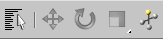At this point
you're almost done and about ready to animate, but the move,rotate,and scale
tools will be ghosted and not selectable yet.
You must first click the "*WWSkin Binding" in the modify panel to gray the word
"*WWSkin binding" then click in the viewport to deselect it, now you may select
the dummy objects.
:::::::::::::::::::::::::::::
Animating
:::::::::::::::::::::::::::::
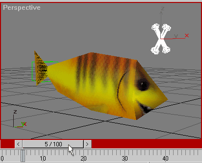The dummy
objects will not work unless you are on any frame other than frame 0 (zero) and
you will also need to have the animate button depressed before beginning,
=====
Click the animate ("Auto") button and move any any frame (other than zero).
=====
Animate your model with the dummy objects (bones) and make note of the ending
frame. When your happy with the anim loop, move on to next part.
:::::::::::::::::::::::::::::::::::::::::::::::::::::::
Export to W3X File
:::::::::::::::::::::::::::::::::::::::::::::::::::::::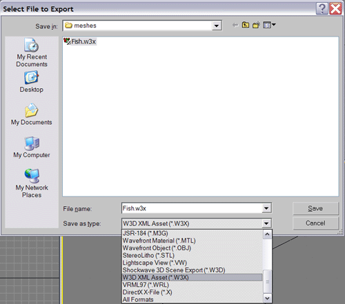
=====
Go to the File menu, select Export
</FONT>
=====
=====
=====